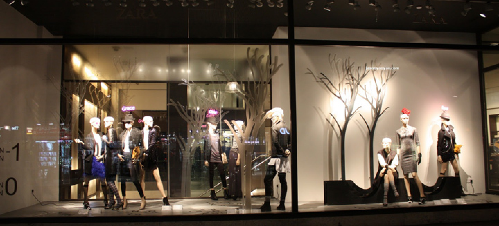
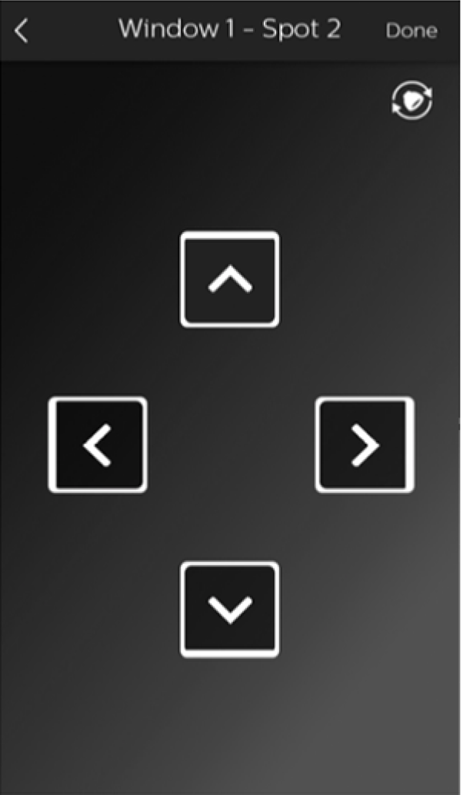
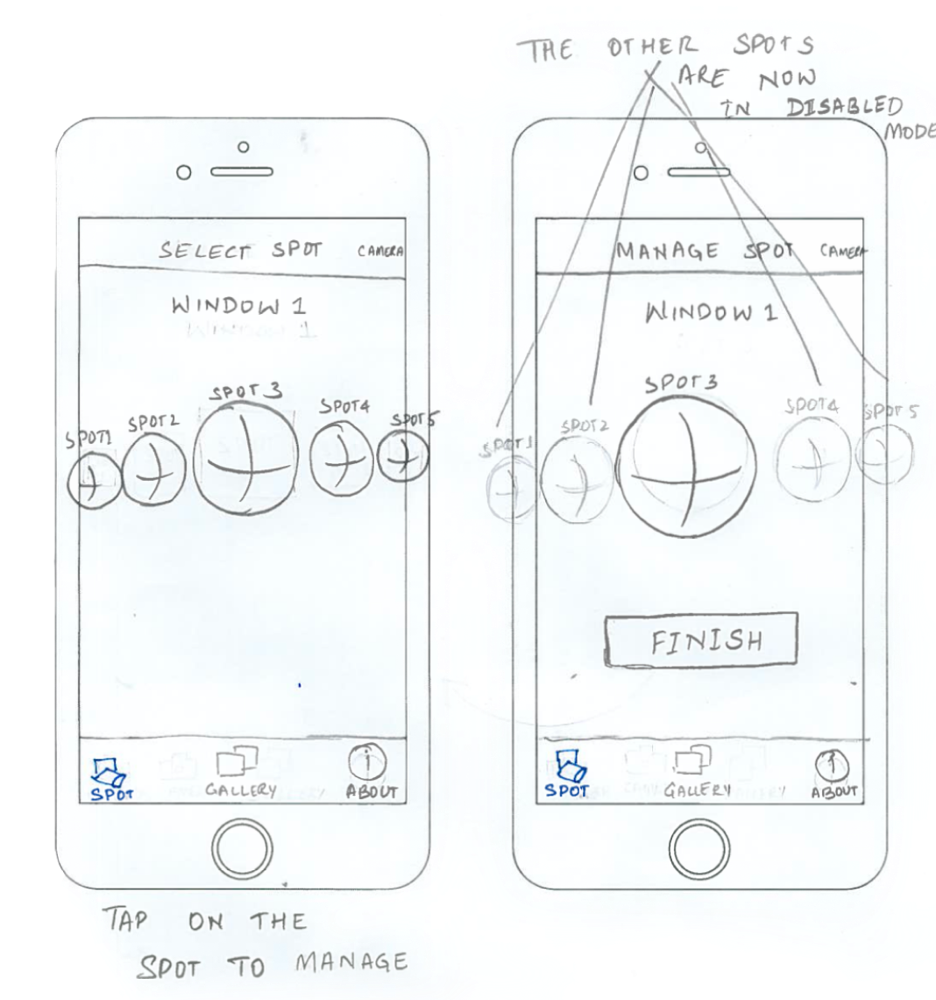

Interact Retail EasyAim
Facilitating seamless aiming and adjustment of lighting settings in
the shop window for Visual Merchandisers
Responsibilties
Visual Merchandisers risk themselves while adjusting the shop window
lighting which sometimes are above 4.5 mtrs
PROBLEM
THE SOLUTION
COMPETITOR ANALYSIS
UNDERSTANDING THE ARCHITECTURE
STORYBOARDING
USER STORIES
DESIGNING THE WIDGET
MIND MAPPING
DRAFTING WIDGET UI + USABILITY TESTING
WIDGET IMPROVEMENTS
DEMO TESTING
CONCLUSION + LEARNINGS
WIREFRAMING
THE FINAL SCREENS
Tools
Role
-
Mentor and guide a team of 2 UX and 1 UI Designer
-
User Research: Explorations and User interviews
-
UX design: Brainstorming, Facilitation, Data Analysis
- User Testing
- Sketch
- Photoshop
- Invision App
Lead Designer and Researcher
Many fashion retailers change the content of their shop window every
2 to 3 weeks. This means that the lighting has to change as well.
Adjusting lighting in the shop window can be cumbersome or even
unsafe. It requires atleast 2 expert personnel to get this job
completed. It is a
state of being cautious and yet remaining creative
.
-
Overview of all the shop windows per store
-
On/Off lights of a particular shop window
-
Get status of non-reachable spots per shop window
- Assign new spots to the shop windows
-
Ability to assign/unassign spots from the shop window
-
Scan for newly added spots on the Dali network
- Seamlessly switch between shop windows from the same screen
UI Widget to pan and tilt spots
Choose appropriate shop window
Assign new spots
We engaged in discussions with the system architect, product architect,
product design engineers, software development engineers, and project
managers to gain a comprehensive understanding of the DALI commissioning
ecosystem. These discussions allowed us to stay informed about the
limitations and technical constraints involved in the process.
After finalizing the blueprint of the product architecture and
addressing other technical intricacies with our internal stakeholders,
our next goal was to present the solution in a manner that customers
could easily grasp and comprehend. To achieve this, I developed a
storyboard that aimed to clarify our assumptions and visually depict the
user journey and experience.
Through interdisciplinary discussions, we collaboratively populated a
Scrum board to outline the tasks required for creating the Minimum
Viable Product (MVP) for our initial beta release. Our primary focus
was on testing the scalability of the product. As part of the
Definition of Ready (DoR) for user stories, I created UX sub tasks
with specific Acceptance Criteria to ensure the readiness and clarity
of each user story.
In the industry, there was a lack of competition in terms of GUI-based
management solutions for motorized spotlights. As a result, we conducted
an analysis of interfaces utilized in the management of lighting systems
in large auditoriums, hands-free gimbal camera operations, and CCTV
operating interfaces.
To develop an intuitive User Interface which can manage the pan and
tilt of the motorised spots
Analysing benchmarks of the UI widget interaction patterns
Gathering insights of the handshakes between DALI network and User
Interfaces
Shaping the user journey by stringing together the persona and various
research findings
Breaking down the requirements into manageable pieces of work to
focus
Exploring an intuitive UI widget for managing pan and tilt of the
spots
Gain a thorough understanding of the analytical geometry related to
light projection angles to facilitate brainstorming and idea
generation.
Creating different interaction UIs to test and verify my
assumptions
Re-iterating the widget based on the feedback received during usability
tests
Mockup showing the navigation pattern and the information architecture
of the app
Refining the UI widget design based on usability feedback received
during testing, resulting in improved user experience.
Demo setup was created to test integrated hardware and UI
What I’d do differently next time.
The final product
Seggregating the pan and tilt widgets
Overlapping the widgets
1
2
3


Visual Merchandiser arrives at the shop window
Selects the spot from the shop window
Takes a picture to send it to the headquarters
Opens the IA Retail EasyAim mobile app and selects the window to
configure
Configures the spot
Designing an intuitive and seamless widget for managing and precisely
aiming the light was paramount for the application. Our design process
began by thoroughly understanding the
capabilities and limitations of the motorized spot
, ensuring our designs aligned with its functionality.
Spot moves as long as you hold the button, stops after releasing.
Feedback:
-
Hard to understand which arrows are for pan and which for
tilt
Drag and move the light to the desired place in the semi-circle
Feedback:
-
Represents the actual position of beam only on the y-axis
-
Precision control is missing
Drag & hold the center circle towards the side you want the spot to
move. Release to stop.
Feedback:
-
Hard to establish the hand-eye coordination
Spot moves to the position as indicated by the sliders
Feedback
:
-
UI does represent the actual position of the beam (but not
accurate)
Gyroscopic movement
Feedback
:
-
UI does NOT represent the actual position of the beam
Tap the arrows towards the direction at which you want the spot to
move.
Feedback:
-
Too many arrows are confusing
-
Mechanical end stop for pan @ 1deg and 360deg
-
Mechanical end stop for tilt @ 1deg and 180deg
- Precision of the light movement is the key
DESIGN CHALLENGE
Developing a 2D interaction UI that effectively controlled the
pan/tilt movements of the luminaire within a 3D space.
Understanding the luminaire behaviour
P1 (20, 30)


HIGH LEVEL WORKFLOW
Created a sneak peek of the application containing the main screens
To capture the high-level interaction patterns of the application, we
utilized quick hand sketches. This allowed us to explore and test our
assumptions early in the design process, gaining valuable insights from
the start.
OPTION 1
OPTION 2

Assumptions:
UI only projection of P in x and y.
X-axis is parallel to the shop window
When,
PAN = Phi, TILT = Theta
Then,
At P0:
x=0, y=0 => Phi=0, Theta=0
At P1:
Phi=20deg, Theta=30deg
OPTION 1
OPTION 2
We invited a select group of ZARA personnel to our testing laboratory
for a sample test, where they assessed the integrated hardware and UI.
This allowed us to gather valuable early feedback on their perception of
the product and its potential for seamless future use.
* The first version of the app followed the older design guidelines from
Philips and later it was re-skinned as per the Interact guidelines
When we began working on this project, the design team in
Eindhoven, Netherlands provided limited support for extensive
research and facilitation of new product designs. Consequently, we
had to devise our own methods for conducting the UX research
process and validating assumptions.
-
Iterate relentlessly.
During the initial stages, we explored numerous options in
search of the right UI solution. We created approximately 20
different types of UI widget sketches and encountered challenges
while conducting usability tests. To streamline the process, I
realized the importance of leveraging efficient interaction
design tools for faster testing and feedback loops.
-
Enhance interactions.
Some design decisions, such as button placement and small
interaction patterns, were occasionally influenced by
stakeholders. I learned the importance of effectively
communicating my logic and reasoning to demonstrate why certain
design approaches were not working and why alternative solutions
may be more effective.
-
Articulate the requirements to materialize your ideas.
By discussing priorities and effort levels with the engineering
team, I was able to prioritize design efforts and foster trust
and respect between the design and engineering teams. I continue
to follow these best practices to ensure successful
collaboration
-
You didn’t fail- you just found 100 ways that didn’t work.
Embrace failure as part of the process. From identifying UI
mistakes to uncovering fundamental UX issues in the app, we
actively sought feedback from peers and stakeholders. I
persisted in refining the app to the best of my ability and
remained open to questioning my own decisions if they did not
align with the needs of end users.
USER INTERVIEWS
After brainstorming the problem statement with internal stakeholders,
we recognized the significance of the EasyAim solution for Visual
Merchandisers at Zara. However, we wanted to gain deeper insights into
the daily routines of Visual Merchandisers and the key factors that
significantly impact their work. As a result, I conducted remote
meetings with several users to understand their shop window decoration
processes and the criteria that greatly influence their work.
My interviewees were 3x more likely to be efficient and save cost by
using the solution of EasyAim
RESEARCH QUESTIONS
-
How much time do you typically take to change the lighting in a shop
window for a new shop window?
-
How often do you change decorations at the shop windows?
-
What motivates you during your work?
-
Where do you generally draw your inspiration from?
-
How many people are involved in changing the light settings in a
shop window?
-
What role does headquarters play in defining the settings of the
window?
-
What is the most used form factor? Smartphone? Tablet? Please
mention the type.
PERSONAS
Being located remotely in India, we had to find effective methods to
empathize with our users.
To achieve this, we conducted extensive research by reading job
descriptions of relevant personas online, exploring LinkedIn profiles
to understand their roles and expectations, and skimming through
fashion retail blogs. Using the data we collected, we created several
user personas as points of reference.
The data gathered during Discovery Phase and Requirement Gathering
Phase helped me to jolt down our user personas

About Me
My Skill set
Portfolio
Resume
Portfolio
EasyAim


View next project : Interact Retail HQ